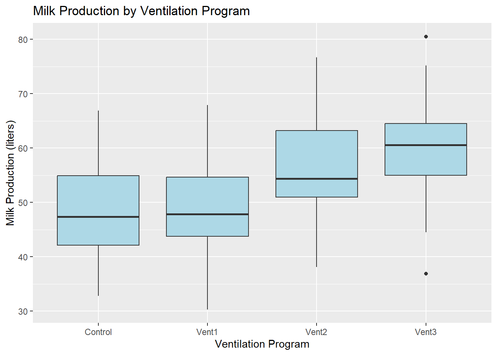
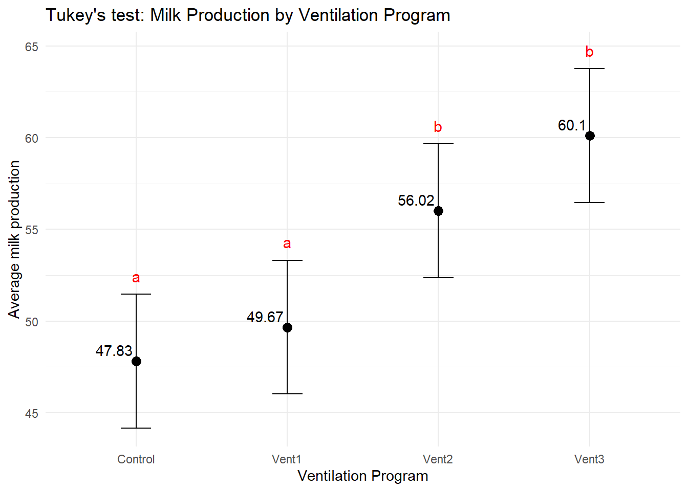
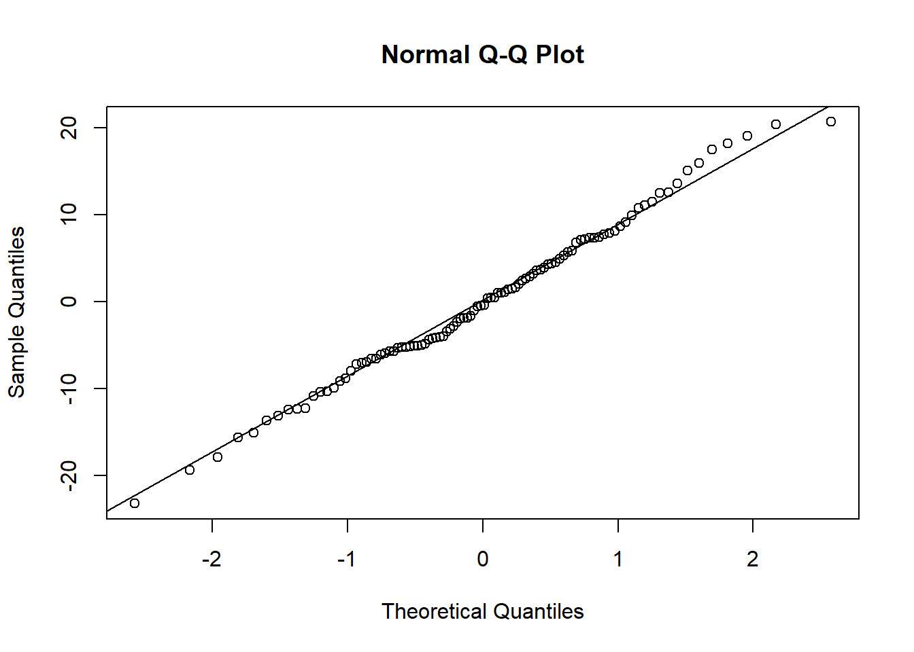

The basic linear model is a fundamental tool in statistics used to analyze the relationship between one or more independent variables and a dependent variable. Several assumptions underlie the linear model, including an additive linear relationship, absence of bias, and a Gaussian distribution for error terms. In its simplest form, the linear model is expressed as:
\(\beta_1, \beta_2, \dots, \beta_n\) are the coefficients for the independent variables \(X_1, X_2, ..., X_n\) respectively,
\(\epsilon\) is the error term.
Assumptions of the Linear Model:
Additive Linear Relationship:
The relationship between the independent variables and the dependent variable is assumed to be linear. This means that the change in the mean of the dependent variable is constant for a one-unit change in each independent variable, holding other variables constant.
Absence of Bias (No endogeneity):
The model assumes that there is no systematic bias in the relationship between the independent and dependent variables. In other words, the model should not suffer from endogeneity, where omitted variables or measurement errors lead to biased parameter estimates.
Gaussian Distribution for Error Terms:
The error terms (( )) are assumed to be normally distributed. This assumption is essential for making statistical inferences, such as hypothesis testing and constructing confidence intervals. Deviations from normality might affect the validity of statistical tests.
The assumptions of the linear model are crucial for the validity of the statistical inferences drawn from the model. Researchers should assess these assumptions to ensure the reliability of the model’s results in practical applications.
6.2 Example in R: Cows’ Milk Production Experiment
Let’s consider an experiment investigating the impact of three ventilation programs (Vent1, Vent2, Vent3 and Control) on the milk production of cows in a compost barn system. The milk production (in liters) is the dependent variable, and the ventilation programs are the independent variables.
Warning: package 'agricolae' was built under R version 4.3.2
# Create a simulated datasetset.seed(123)ventilation_data<-data.frame( Ventilation =rep(c("Vent1", "Vent2", "Vent3", "Control"), each =25), MilkProduction =c(rnorm(25, mean =50, sd =10),rnorm(25, mean =55, sd =10),rnorm(25, mean =60, sd =10),rnorm(25, mean =45, sd =10)))# Visualize the dataggplot(ventilation_data, aes(x =Ventilation, y =MilkProduction))+geom_boxplot(fill ="lightblue")+labs(title ="Milk Production by Ventilation Program", x ="Ventilation Program", y ="Milk Production (liters)")

This code generates a simulated dataset representing the milk production of cows under different ventilation programs. The boxplot visualization provides an initial understanding of the data distribution.
Next, we can fit a basic linear model to quantify the relationship between ventilation programs and milk production:
\(Y_{ij}\) is the milk production associated to the each animal \(i\) and treatment \(j\),
\(\beta_0\) is the intercept term or the overall mean,
\(\beta_j\) is the coefficient for the independent variable \(X_j\) with \(j\) representing the four levels of ventilation (\(j = 1, 2, 3, 4\)),
\(\epsilon_{ij}\) is the error term.
# Fit a basic linear modellm_model<-lm(MilkProduction~Ventilation, data =ventilation_data)# Perform Tukey's HSD test using agricolaetukey_results<-LSD.test(lm_model, "Ventilation", alpha =0.05)tukey_results$means
MilkProduction groups
Vent3 60.10241 a
Vent2 56.02137 a
Vent1 49.66670 b
Control 47.82576 b
Lets provide some graphical visualization of the result:
# Extract the mean differences and group namestukey_df<-as.data.frame(tukey_results$means)tukey_df$trt<-rownames(tukey_df)
# Visualization using ggplot2g<-ggplot(tukey_df, aes(x =trt, y =MilkProduction))+geom_point(size =3)+geom_errorbar(aes(ymin =LCL, ymax =UCL), width =0.2)+geom_text(aes(label =as.character(round(MilkProduction, 2))), vjust =-0.5, hjust =1.1)+labs(title ="Tukey's test: Milk Production by Ventilation Program", x ="Ventilation Program", y ="Average milk production")+theme_minimal()g+geom_text(data =tukey_df,aes(x =trt, y =UCL+1, label =c("a", "a", "b", "b")), size =4, color ="red")

As pointed out earlier, testing the assumptions of a linear model is a crucial step to ensure the reliability of the model’s results. One of the key assumptions is the normality of error terms. Let’s conduct a normality test for the residuals of the linear model using the Shapiro-Wilk test. If the p-value from the test is greater than a significance level (commonly 0.05), we fail to reject the null hypothesis, suggesting that the residuals follow a normal distribution.
Here’s how you can perform the normality test in R:
# Extract residuals of the linear modelresiduals<-residuals(lm_model)# Shapiro-Wilk test for normalityshapiro_test<-shapiro.test(residuals)# Visualization of residualsqqnorm(residuals)qqline(residuals)

# Display the normality test resultsprint(shapiro_test)
Shapiro-Wilk normality test
data: residuals
W = 0.99244, p-value = 0.852
Correction:
Breakdown of the code:
First, we extract the residuals using the residuals function.
The Shapiro-Wilk test (one of the common normality tests) is performed using shapiro.test on the residuals.
A Q-Q plot is generated using qqnorm and qqline to visually assess the normality of the residuals.
The results of the normality test are printed using print(shapiro_test).
Interpretation: Inspect the p-value from the Shapiro-Wilk test. If the p-value is greater than 0.05, it suggests that we do not have sufficient evidence to reject the null hypothesis of normality. Additionally, examine the Q-Q plot; if the residuals closely follow the reference line, it indicates normality.